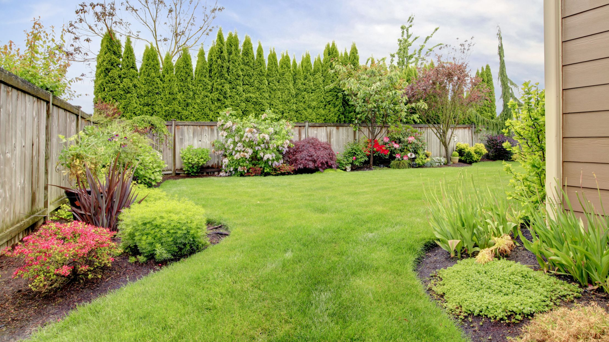

In Your Backyard

A habitat is a combination of food, water, shelter, and space arranged to meet the needs of wildlife. Even a small yard can be made into a wildlife habitat and attract birds, butterflies, beneficial insects, and small animals.
All animals need food. Planting native plants and shrubs can encourage birds and butterflies to visit. Native plants are those plants that have adapted to live in a particular area. They are accustomed to how much the temperature changes over the year and the amount of rain that falls. Because native plants grow best in the local area, they require little maintenance to grow strong.
Birds and animals also need water to drink. They may drink water from ponds, rivers, wetlands, or oceans. In your backyard, you can add birdbaths, a rain garden, or even a small pond to encourage wildlife to visit.
Finally, animals require places to hide and feel safe from people or other wildlife. Many shrubs provide great hiding places with their bushy leaves. Some animals build nests in holes in dead trees. You can add birdhouses or bat roosting boxes to your yard to attract wildlife.